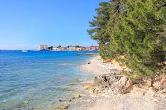
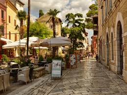
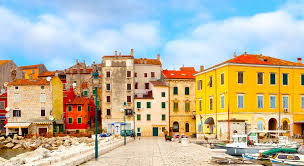
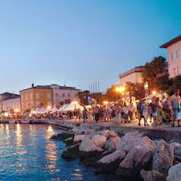
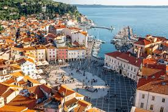

The romantic beach Impression of the city  The beautyful old town  The harbor male  The promenade by night  The market place
 Impression of the city Impression of the city
Impression of the city Impression of the city